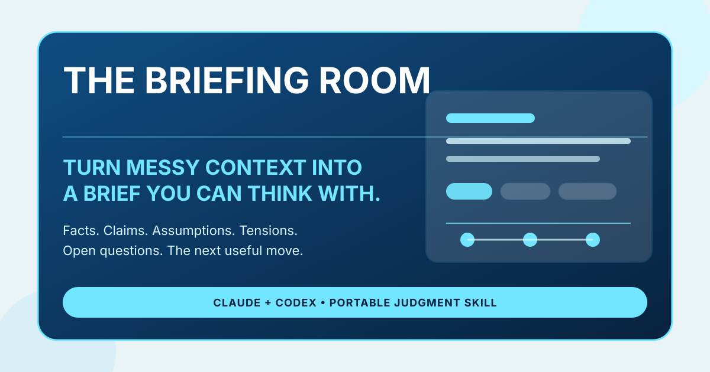

Best for
Messy information that needs structure before critique, planning, drafting, research, or decision-making.
Turn messy notes, transcripts, research dumps, meeting context, customer feedback, and personal sensemaking into a structured brief you can actually think with.

Messy information that needs structure before critique, planning, drafting, research, or decision-making.
AI skill for messy notes, meeting transcript summarizer with structure, research synthesis workflow, customer feedback synthesis, and personal sensemaking with AI.
It separates facts, claims, assumptions, tensions, open questions, and next use so the output is useful to both humans and downstream agent workflows.
A normal summary compresses. The Briefing Room organizes. It helps people understand what is directly supported, what is being inferred, what is still unknown, and what the material is ready for next.
The Briefing Room is a portable Claude and Codex skill for turning messy context into a structured brief you can think with.
Use it for messy notes, meeting transcripts, research dumps, customer feedback, planning fragments, and personal context that need structure before deeper thinking or decision support.
The Briefing Room organizes messy context. Ground Truth challenges a claim or plan. The Quorum deliberates a consequential decision using multiple lenses.